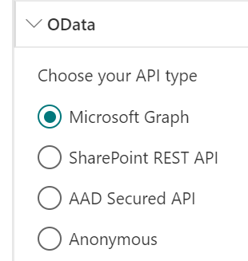

Available data sources¶
The following data sources are available in the data visualizer Web Part:
| Source | Description |
|---|---|
| Static Data | Displays a static set of JSON data. |
| OData | Retrieves data from OData APIs like Microsoft Graph, SharePoint REST, AAD Secured API or Anonymous API. |
| CAML | Retrieves data from SharePoint using a CAML query. |
Be careful, when you switch the data source in the property pane, all the previous data source properties are lost. We do this to avoid polluting the Web Part property bag.
Static data source¶
When working with static data, you will need to respect the following interface:
{
items: [
{
MyItemProperty1: "Property Value 1",
...
}
],
MyContextProperty: "My Value",
...
}
Even if you don't return items, you must specifiy this property. In this case, pass an empty array.
OData data source¶
The OData data source allows you to get data from the following APIs
- Microsoft Graph: both v1.0 or beta endpoint.
- SharePoint REST API: the current site or an other site in your tenant.
- Azure Active Directoy secured API like an Azure function, Azure Web Application, etc.
-
Anonymous API

Microsoft Graph¶
The URL supports the following formats: * me * /me * https://graph.microsoft.com/v1.0/me * https://graph.microsoft.com/beta/me * me/events?$filter=startswith(subject, 'ship')
Before using a Microsoft Graph resource, you need to ensure you allowed the correct API permissions at tenant level. Because you can't define API permissions through the Web Part package declaratively (i.e
webApiPermissions), we recommend you to use the PnP Office 365 CLI to add correct permissions for your API:
o365$ spo serviceprincipal grant add --resource 'Microsoft Graph' --scope 'Mail.Read'
SharePoint REST API¶
The URL supports the following formats:
- /_api/ (will target the root site)
-
/_api/ (ex: http://mycompany.sharepoint.com/sites/intranet/_api/lists)
Azure Active Directory secured API¶
- Follow this procedure to set up your Azure Active Directory application. Don't forget to add at least the 'user impersonation' permission to be able to call the API endpoint.
Before using an AAD secured resource, you need to ensure you allowed the correct API permissions at tenant level. Because you can't define API permissions through the Web Part package declaratively (i.e
webApiPermissions), we recommend you to use the PnP Office 365 CLI to add correct permissions for your API:
o365$ spo serviceprincipal grant add --resource '<aad_app_display_name>' --scope 'user_impersonation'
- Allow your SharePoint domain (ex: https://mycompany.sharepoint.com) as allowed origin in the service or application CORS (Cross-origin resource sharing) settings. Here a procedure for an Azure function.
Anonymous¶
You can also call an API endpoint with no specific authentifcation like an Azure Http trigger Function with function code. By default, we use the demo OData v4 services provided by https://www.odata.org/odata-services/ to demonstrate the capability.
Set HTTP headers or body¶
The only method allowed are GET or POST. For each, you have the ability so set your own HTTP headers. The value must be a valid JSON value:
{
"Content-Type": "application/json;odata=verbose",
"Accept": "application/json",
...
}
If you specify a
POSTrequest, you can also benefit of builtin tokens.
{
"ItemsCount": "{itemsCountPerPage}",
"MyProperty": "My Value",
...
}
Pagination¶
For each API type, you can control how the results will be paginated in order to improve performances.
Dynamic paging¶
Use a Dynamic paging if the underlying API you are using supports paging mechanisms (likely using $top and $skip or $skipToken tokens, for instance Microsoft Graph or SharePoint REST API).
Use server-side paging¶
Some APIs like Microsoft Graph or the SharePoint REST API provide a server-side paging functionality (see https://docs.microsoft.com/en-us/graph/paging for more information). Basically, it allows you to paginate results more easily by using a pre-calculated next page link URL instead of building it manually.
If checked, the paging will be based on the @odata.nextLink value from the HTTP response. It means when you will click on the next page button, this value will be used to get the next set of results. Thus, the items count and paging information (i.e first page, current page, next page, previous page, and last page) will be determined automatically as long as you move through pages.
If unchecked, it will be your URL to be executed to get the next page results. In this last scenario you likely want to provide a dynamic URL using builtin tokens.
Example
-
With server-side paging enabled using
@odata.nextLink:/me/messages?$top={itemsCountPerPage} or /me/messages?$top=2Here, the
$skiptoken will be provided automatically in the@odata.nextLinkso you don't have to provide it in the URL. -
Without server-side paging enabled using
$topand$skiptokens:<your_sharepoint_site_url>/_api/lists?$top={itemsCountPerPage}&$skip={startRow}If you want to control the paging by yourself, you will have to provide a
$skipvalue manually using builtin tokens. You can use the{itemsCountPerPage}and{startRow}tokens where{startRow}corresponds to the number or items per page * the current page number (start from 0) and{itemsCountPerPage}to the number of items per page configured in the property pane. The URL and the items count will be resolved dynamically based on these token values as long as you move through pages. Because we can't determine the total number of items, in some cases, the last page could be empty. It happens for example when the 'total items count'/'items count per page' is even (i.e. exact same number of items for each page).
Static paging¶
If performance is not an issue (i.e for a small chunk of data), you can also set a static paging on your data based on a results array. In this case, you will have to provide the response field to use as the items array to get the total items count. Then, configure the desired number items per page to generate pages dynamically.
Example
- Static paging using the
itemsarray field./me/messages?$top=10
SharePoint CAML¶
If you don't specify view fields (not recommended), all fields from the list will be loaded an available in the template. The paging will be determined automatically base on the items count per page settings.